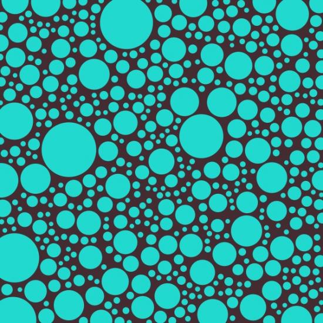

You solved circle packing! Nice work!
The method of growing circles until they run out of room is very elegant.
Here's a quick and dirty test using the same method and path1.intersects(path2) for compound paths. To make it really work, the overlap check would need to rotate the shapes and then see if there is still some room left if a shape is rotated. But that sounds like a lot of work.
size(500, 500) class Star: def __init__(self): self.x = random(WIDTH) self.y = random(HEIGHT) self.angle = random(360) self.radius = 1 self.points = random(4, 10) stars = [Star() for i in range(10)] speed(10) def draw(): paths = [] global stars for s in stars: path = star(s.x, s.y, s.points, s.radius, s.radius*2, draw=False) path.rotate(s.angle) path = path.transform.transformBezierPath(path) drawpath(path) paths.append(path) for path1 in paths: has_room = True for path2 in paths: if path1 != path2: if path1.intersects(path2): has_room = False break if has_room: i = paths.index(path1) stars[i].radius += 1
cool, I'll check it out.
btw.. the idea of growing the circles came from Fabio :-)
Here's another interesting circle packing algorithm, ported from Sean McCullough's code for Processing. It's based on spring physics (e.g. like the Graph library): circles are attracted to the center of the canvas, and repulse other intersecting circles.
You can drag circles around with the mouse.
Play movie
# Ported from Sean McCullough's Processing code: # http://www.cricketschirping.com/processing/CirclePacking1/ # See also: http://en.wiki.mcneel.com/default.aspx/McNeel/2DCirclePacking from nodebox.geo import distance class circle: def __init__(self, x, y, radius, fill=None): self.x = x self.y = y self.radius = radius self.fill = fill def _offset(self): return distance(self.x, self.y, WIDTH/2, HEIGHT/2) offset = property(_offset) def contains(self, x, y): return distance(self.x, self.y, x, y) <= self.radius def intersects(self, other): d = distance(self.x, self.y, other.x, other.y) return d < self.radius + other.radius def draw(self): fill(self.fill) stroke(0.3) strokewidth(1) oval( self.x-self.radius, self.y-self.radius, self.radius*2, self.radius*2 ) def pack(circles, damping=0.1, padding=2, exclude=[]): circles.sort(lambda a, b: a.offset < b.offset) # Repulsive force: move away from intersecting circles. for i in range(len(circles)): circle1 = circles[i] for j in range(i+1, len(circles)): circle2 = circles[j] d = distance(circle1.x, circle1.y, circle2.x, circle2.y) r = circle1.radius + circle2.radius + padding if d**2 < r**2 - 0.01: dx = circle2.x - circle1.x dy = circle2.y - circle1.y vx = (dx / d) * (r-d) * 0.5 vy = (dy / d) * (r-d) * 0.5 if circle1 not in exclude: circle1.x -= vx circle1.y -= vy if circle2 not in exclude: circle2.x += vx circle2.y += vy # Attractive force: all circles move to center. for circle in circles: if circle not in exclude: vx = (circle.x - WIDTH/2) * damping vy = (circle.y - HEIGHT/2) * damping circle.x -= vx circle.y -= vy #import psyco #psyco.bind(physics) n = 30 circles = [] for i in range(n): c = circle( random(WIDTH), random(HEIGHT), radius=random(i)+10 ) c.fill = color(c.radius*0.02, 0.2+c.radius*0.03, 0, 0.8) circles.append(c) size(500, 500) speed(50) dragged = None def draw(): # Drag objects with the mouse. global dragged if dragged: dragged.x = MOUSEX dragged.y = MOUSEY if not mousedown: dragged = None elif not dragged: for circle in circles: if circle.contains(MOUSEX, MOUSEY): dragged = circle for circle in circles: circle.draw() # More iterations = smoother physics but slower animation. iterations = 15 for i in range(1, iterations): pack(circles, damping=0.1/i, exclude=[dragged])
Excellent idea! I have a few suggestions to make this original code even faster, but I'm not good enough in Python to implement it, so I'll explain it hoping that somebody will implement my ideas.
First of all you wouldn't have to check collisions against all circles. it would be enough to check only with all circles whose center is in a square that is maxradius*4+mingap*2 with the active circle in the middle. that way you're only checking a subset of collisions but still consider all circles in the vicinity. should speed things up cpu wise.
also it would be a lot faster, if instead of only growing from smallest to largest, you would do the following: try it at smallest to see if it is colliding immediately; if so, discard it. then right away try largest to see if it has room to grow fully. if it does you're already done. if it is colliding at largest, try half-way between smallest and largest. if it's not colliding then, only grow larger. if it is colliding only grow smaller. you saved a lot of time.
Please, I'd be very glad if anybody good at python could help optimize the code with my suggestions. I tried it myself, but failed.
Kind regards
-- Peter
Hey Tom, I just saw the video you uploaded, really cool.
I have done something similar to Georgio's example although with a different approach that isn't really algorithmic--basically it just does some of the math. It's also not really circle packing since it make no real attempt to fill the space.
The approach is to make a triangular tessellation (I'm using Delny http://pypi.python.org/pypi/Delny/0.2.0 to make a DeLaunay tessellation because it's an easy way to start with random data, but any will do). Then you simply find the incircles of the triangles. The whole idea being that triangular tilings are easy to do than circle packing and it guarantees the circles won't intersect without having to test for collisions.
Examples:
http://www.flickr.com/photos/21966638@N00/3400508791/
http://www.flickr.com/photos/21966638@N00/3401315466/
Code:
import delaunay # from http://pypi.python.org/pypi/Delny/0.2.0 from math import sqrt size(800, 800) background(.9, .9, .9) def distance(p1, p2): '''p1 and p2 are (x, y) arrays''' return sqrt( pow(p1[0]-p2[0], 2) + pow(p1[1] - p2[1],2)) class triangle: def __init__(self, a, b, c): """a, b, c, are just the vertices as (x,y) pairs""" self.vertices = [a, b, c] self.lengths = [] for i in range(3): self.lengths.append(distance(self.vertices[i], self.vertices[i-1])) def draw(self): beginpath(*self.vertices[0]) lineto(*self.vertices[1]) lineto(*self.vertices[2]) endpath() def incenter(self): x = (self.lengths[0]*self.vertices[1][0] + self.lengths[1]*self.vertices[2][0] + self.lengths[2]*self.vertices[0][0])/sum(self.lengths) y = (self.lengths[0]*self.vertices[1][1] + self.lengths[1]*self.vertices[2][1] + self.lengths[2]*self.vertices[0][1])/sum(self.lengths) return (x,y) def incircleRadius(self): from operator import mul s = sum(self.lengths)/2.0 return sqrt((reduce(mul, [s-x for x in self.lengths]))/s) stroke(.8,.8, .9) strokewidth(.1) nofill() points = [] n = 1800 # this is the number of vertices from which the triangles will be made for i in range(n): x = random(50., WIDTH-50.0) y = random(50., HEIGHT-50.0) points.append((x, y)) triangulation = delaunay.Triangulation(points) tri = triangulation.get_elements() colormode(HSB) for t in tri: fill(random(0, 1.0), .2, random(.2, .5), .5 ) tri = triangle(*t) incenter = tri.incenter() radius = tri.incircleRadius() oval(incenter[0]-radius, incenter[1]-radius, 2*radius, 2*radius)
can these codes handle 10,000 discs too?

Circle Packing code
Posted by Giorgio O. on Aug 07, 2008
dear all,
few months ago I promised Tom to publish the algorithm for circle packing that we used to produce this work: http://www.flickr.com/photos/todotoit/2126111606/
that particolar piece of code was 100% crap, now I finally had the time to polish it a little bit since we are going to use it for some new projects.
The code could still be optimized - there's too much brute force involved - but it works pretty decently if you are not in an hurry